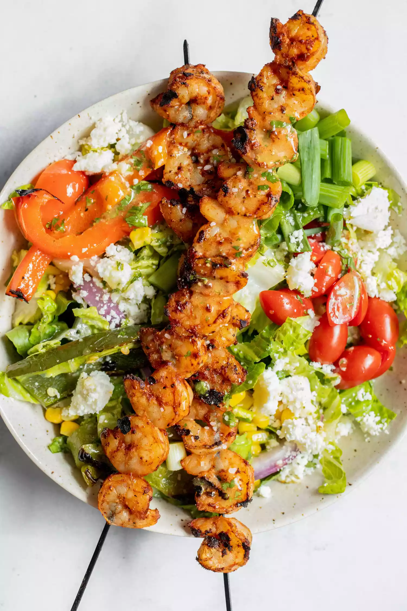

Grilled Shrimp Salad

Ingredients
- 1 lime, juiced
- 2 tablespoons minced cilantro
- 1 teaspoon Dijon mustard
- 1 tablespoon sugar
- 1/3 cup olive oil
- Kosher salt, to taste
- Black pepper, to taste
- 1 red bell pepper, seeded and quartered
- 1 green bell pepper, seeded and quartered
- 1/2 red onion, cut into quarters
- 1 jalapeno, halved (remove seeds for less heat)
- 1 tablespoon olive oil
- Kosher salt, to taste
- Black pepper, to taste
- 1 pound shrimp (25-30 count), peeled and deveined
- 1 tablespoon olive oil
- 1 teaspoon chili powder
- 1/2 teaspoon garlic powder
- 1/2 teaspoon kosher salt
- 1/2 teaspoon black pepper
- 2 heads romaine lettuce, chopped
- 1 cup frozen sweet corn, thawed
- 1 cup cherry tomatoes, quartered
- 1 avocado, pitted and chopped
- 4 scallions, thinly sliced
- 4-6 ounces Cotija cheese
Wondering how to make this? Here's how.
- Preheat grill:
- Preheat your grill to medium-high heat.
- Make the vinaigrette:
- Preheat your grill to medium-high heat.
- In a glass jar with a lid, combine the lime juice, minced cilantro, mustard, sugar, olive oil, and a pinch of salt and black pepper.
- Add the lid and shake well to combine all of the ingredients. Set aside.
- Grill the vegetables:
- Drizzle the peppers and onions with olive oil.
- Season with a pinch of salt and pepper and using tongs add to your preheated grill.
- Grill the vegetables for 4-5 minutes per side until they are well charred and tender.
- Using tongs, remove from the grill and let cool. Roughly chop the vegetables for the salad.
- Prep and season the shrimp:
- In a large bowl, add the shrimp. Drizzle with olive oil and season with chili powder, garlic powder, salt, and pepper.
- Then skewer the shrimp, dividing them between 4 skewers.
- GIf you use wooden/bamboo skewers, make sure to soak them well so they don’t burn completely on the grill.
- Grill the shrimp:
- Add shrimp skewers to grill (I recommend lightly oiling grill to prevent sticking) and grill for 2-3 minutes per side.
- The shrimp are done when they are pink and no longer translucent in the center.
- Remove shrimp from grill and serve them as soon as possible.
- Assemble the salad and serve:
- Add the romaine lettuce into a large serving plate or bowl and drizzle with a tablespoon or two of the vinaigrette.
- Top with chopped, grilled vegetables, grilled shrimp, sweet corn, avocado, cherry tomatoes, scallions, and crumbled Cotija cheese.
- Serve and enjoy!
Back to the Top
Back to Homepage